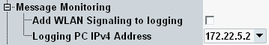

Message Monitoring Settings
The "Message Monitoring" section allows you to configure the IPv4 connection to an R&S CMWmars instance and to enable the message replication.

Message monitoring settings
For background information, see "Message Logging".
Enables or disables R&S CMWmars message monitoring for the WLAN signaling application.
Remote command:Selects the IP address to which the messages are sent for monitoring.
The address pool is configured globally, see "Setup" dialog, section "Logging".
Remote command: